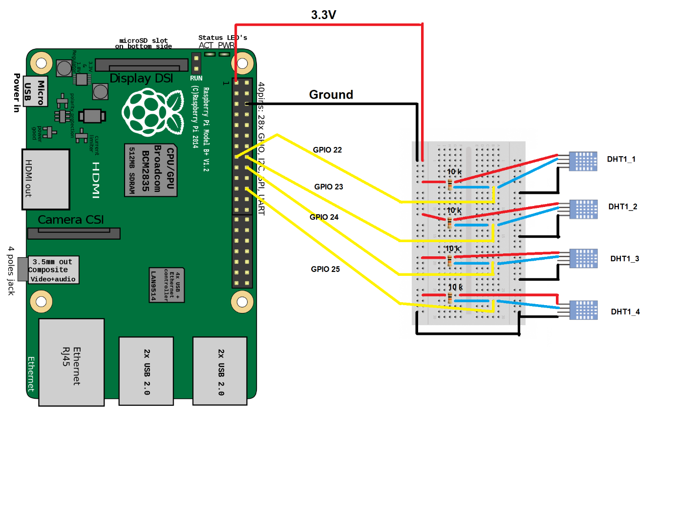

Introduction
The project that I was working is the part of the automated hive monitoring system, called Smart Hive. My group, called “2bee || !2bee”, consisting of Paul Westman, Roberto Loja, and Yurii Sentsiv(myself) designed a prototype of Smart Hive, that would gather different information on hives, where our smart system would be installed. Specifically, I was working on temperature and humidity monitoring, as well as bee cluster detection. Here I would like to share my achievement, as well as my progress, so everyone could rebuild my project.
System Diagram
System Diagram
The concept of our project is to give an ability remotely track the status of the hives. It will be achieved to fetching the sensor readings from the hives, that would be attached to Raspberry Pi, process them, save in the database, and then deliver to customers in the user-friendly Android application representation.
Budget of the Project
As it was decided in my group, different parts of the project would be covered by different group member, as it will result it total group budget, decreasing total cost, as well as on time of research given to different parts of the Smart Hive project. I ended up using Raspberry PI, DHT11 temperature/humidity sensors, as well as resistors, jumper cables, electrical tape, soldering iron, Humber PCB Components Kit, and making laser cut dummy hive. Fortunately, most of the parts I obtained in kit, that I used in my previous courses, as well as laser cut hive, that to presented to me for free. Following is my budget:

Time Commitment
At the start of our semester we created schedule for better time management, and tried to follow all the milestones in time. If exclude all the progress reports, meetings and designing, here are the key point that need to be done, in order for anyone to replicate the project:
| Milestone |
Time required |
| Ordering parts |
May vary where you order them, but if you get them in the Canada Robotix, you can get them in few hours. |
| Laser Cutting the acrylic hive |
10 minutes |
| Printing PCB |
1 day |
| Soldering and testing PCB |
3 hours |
| Soldering the sensor to wires and resistor |
30 minutes |
| Attaching the sensor on the hive |
5 minutes |
| Attaching the sensors on the PI’s GPIOs |
10 minutes |
| Raspberry Pi 3 Setup |
2 hours |
| Loading the code and executing it |
10 minutes |
| Unit testing |
30 minutes |
The whole process should take around 2-3 days, if the appropriate tools are accessible (PCB print, laser cutter, soldering station). For myself the whole process was split into 15 weeks, where every week I committed few hours, in order to be on track and be able to finish everything by the week 15. Attached is the original project schedule:
Schedule
Mechanical Assembly
Step 1:
Create the casing for the dummy hive, in my case I was using Corel Draw. For our laser cutting machine, specific colours specified the inside cut red, outside cut green, engraving black. Attached is my casing that consist of 4 part, which I have glued afterwards.
Pdf for cutting used
Step 2:
In my case, because I bought DHT11 sensors without PCB board with resistors, that sensor needs, I simply soldered the resistors to the sensors between Power(Pin1) & Data(Pin2), so I didn’t need to use the breadboard, which was used in development purposes.

If it is possible, I recommend you to buy the one with the PCB.

Step 3:
In this next step, we will be connecting the sensors to the Raspberry Pi. In my case I was struggling to connect multiple sensors, as in the most example of code, this particular sensor was using GPIO4, which is also GPCLK0. All other GPIO pins would not work with this particular code in C, nor with Python equivalent:
#include <wiringPi.h>
#include <stdio.h>
#include <stdlib.h>
#include <stdint.h>
#define MAXTIMINGS 85
#define DHTPIN 7
int dht11_dat[5] = { 0, 0, 0, 0, 0 };
void read_dht11_dat()
{
uint8_t laststate = HIGH;
uint8_t counter = 0;
uint8_t j = 0, i;
float f;
dht11_dat[0] = dht11_dat[1] = dht11_dat[2] = dht11_dat[3] = dht11_dat[4] = 0;
pinMode( DHTPIN, OUTPUT );
digitalWrite( DHTPIN, LOW );
delay( 18 );
digitalWrite( DHTPIN, HIGH );
delayMicroseconds( 40 );
pinMode( DHTPIN, INPUT );
for ( i = 0; i < MAXTIMINGS; i++ )
{
counter = 0;
while ( digitalRead( DHTPIN ) == laststate )
{
counter++;
delayMicroseconds( 1 );
if ( counter == 255 )
{
break;
}
}
laststate = digitalRead( DHTPIN );
if ( counter == 255 )
break;
if ( (i >= 4) && (i % 2 == 0) )
{
dht11_dat[j / 8] <<= 1;
if ( counter > 16 )
dht11_dat[j / 8] |= 1;
j++;
}
}
if ( (j >= 40) &&
(dht11_dat[4] == ( (dht11_dat[0] + dht11_dat[1] + dht11_dat[2] + dht11_dat[3]) & 0xFF) ) )
{
f = dht11_dat[2] * 9. / 5. + 32;
printf( "Humidity = %d.%d %% Temperature = %d.%d C (%.1f F)\n",
dht11_dat[0], dht11_dat[1], dht11_dat[2], dht11_dat[3], f );
}else {
printf( "Data not good, skip\n" );
}
}
int main( void )
{
printf( "Raspberry Pi wiringPi DHT11 Temperature test program\n" );
if ( wiringPiSetup() == -1 )
exit( 1 );
while ( 1 )
{
read_dht11_dat();
delay( 1000 );
}
return(0);
}

Instead I found Adafruit library that handles the DHT11 on the regular GPIO pins, so consequently I used GPIO22 – GPIO25 for 4 sensors. https://github.com/adafruit/Adafruit_Python_DHT . Instruction on install are in the README of that Git project.
The following is the wiring that I used to connect my DHT11 to Raspberry PI’s GPIO 22-25 pins.

As I said previously, you don’t need to have a resistor, if you’ll get the sensor with the PCS. In my case had it soldered and isolated with the electrical tape.
PCB / Soldering
As was mentioned before I used the PCB that was provided by Humber College. The EAGLE software was used in order to draw it. We received freshly printed PCBs and had to solder all of the components on them. In my project, I used the LED mounted on top of the PCB in order to indicate when data from sensors is being read. Following are the schematics and board for PCB.

Scheme
Board
I also tried to print my custom PCB in order to recreate the PCB of the DHT11, but I had issues with soldering it, as the plates for the components were too tiny to be properly soldered. Following if the schematics and board for it.
Scheme
Board
Power Up
Now, when all of the wiring are done, we can use the Python code in order to read the data. The following is the code that initializes the GPIO pins 22-25 and tries to read the data from them. In case of success, the “1.c” program gets called, which will light up the LED on the PCB green, indicating that the data read was successful. But, if there were any issues, the “2.c” program is going to be called, which will light red.
Pythone program
#!/usr/bin/python
# Copyright (c) 2014 Adafruit Industries
# Author: Tony DiCola
# Permission is hereby granted, free of charge, to any person obtaining a copy
# of this software and associated documentation files (the "Software"), to deal
# in the Software without restriction, including without limitation the rights
# to use, copy, modify, merge, publish, distribute, sublicense, and/or sell
# copies of the Software, and to permit persons to whom the Software is
# furnished to do so, subject to the following conditions:
# The above copyright notice and this permission notice shall be included in all
# copies or substantial portions of the Software.
# THE SOFTWARE IS PROVIDED "AS IS", WITHOUT WARRANTY OF ANY KIND, EXPRESS OR
# IMPLIED, INCLUDING BUT NOT LIMITED TO THE WARRANTIES OF MERCHANTABILITY,
# FITNESS FOR A PARTICULAR PURPOSE AND NONINFRINGEMENT. IN NO EVENT SHALL THE
# AUTHORS OR COPYRIGHT HOLDERS BE LIABLE FOR ANY CLAIM, DAMAGES OR OTHER
# LIABILITY, WHETHER IN AN ACTION OF CONTRACT, TORT OR OTHERWISE, ARISING FROM,
# OUT OF OR IN CONNECTION WITH THE SOFTWARE OR THE USE OR OTHER DEALINGS IN THE
# SOFTWARE.
import Adafruit_DHT
from subprocess import call
# Sensor should be set to Adafruit_DHT.DHT11,
# Adafruit_DHT.DHT22, or Adafruit_DHT.AM2302.
sensor = Adafruit_DHT.DHT11
# Example using a Beaglebone Black with DHT sensor
# connected to pin P8_11.
#pin = 'P8_11'
# Example using a Raspberry Pi with DHT sensor
# connected to GPIO23.
pin1 = 22
pin2 = 23
pin3 = 24
pin4 = 25
# Try to grab a sensor reading. Use the read_retry method which will retry up
# to 15 times to get a sensor reading (waiting 2 seconds between each retry).
humidity1, temperature1 = Adafruit_DHT.read_retry(sensor, pin1)
humidity2, temperature2 = Adafruit_DHT.read_retry(sensor, pin2)
humidity3, temperature3 = Adafruit_DHT.read_retry(sensor, pin3)
humidity4, temperature4 = Adafruit_DHT.read_retry(sensor, pin4)
# Note that sometimes you won't get a reading and
# the results will be null (because Linux can't
# guarantee the timing of calls to read the sensor).
# If this happens try again!
if humidity1 is not None and temperature1 is not None:
print('1st: Temp={0:0.1f}*C Humidity={1:0.1f}%'.format(temperature1, humidity1))
call(["./1"])
else:
print('Failed to get first readings. Try again!')
call(["./2"])
if humidity2 is not None and temperature2 is not None:
print('2nd: Temp={0:0.1f}*C Humidity={1:0.1f}%'.format(temperature2, humidity2))
call(["./1"])
else:
print('Failed to get second readings. Try again!')
call(["./2"])
if humidity3 is not None and temperature3 is not None:
print('3rd: Temp={0:0.1f}*C Humidity={1:0.1f}%'.format(temperature3, humidity3))
call(["./1"])
else:
print('Failed to get third readings. Try again!')
call(["./2"])
if humidity4 is not None and temperature4 is not None:
print('4th: Temp={0:0.1f}*C Humidity={1:0.1f}%'.format(temperature4, humidity4))
call(["./1"])
else:
print('Failed to get fourth readings. Try again!')
call(["./2"])
C program for LED blink green
#include <stdio.h>
#include <stdlib.h>
#include <stdint.h>
#include <wiringPi.h>
int main (void)
{
int i = 0;
if (wiringPiSetup () == -1)
exit (1) ;
//printf ("Success\n") ;
pinMode (0, OUTPUT) ;
pinMode (1, PWM_OUTPUT) ;
for (i = 0; i < 1; i++)
{
digitalWrite (0, LOW) ;
pwmWrite (1, 1023) ;
delay (500);
digitalWrite (0, LOW) ;
pwmWrite (1, 0) ;
delay (500);
}
return 0 ;
}
C program for LED blink red
#include <stdio.h>
#include <stdlib.h>
#include <stdint.h>
#include <wiringPi.h>
int main (void)
{
int i = 0;
if (wiringPiSetup () == -1)
exit (1) ;
//printf ("Fail\n") ;
pinMode (0, OUTPUT) ;
pinMode (1, PWM_OUTPUT) ;
for (i = 0; i < 1; i++)
{
digitalWrite (0, HIGH);
pwmWrite (1, 0) ;
delay (500);
digitalWrite (0, LOW) ;
pwmWrite (1, 0) ;
delay (500);
}
return 0 ;
}
Unit Testing
If the set up steps will be followed, then the following result should be expected:

If you don’t have the PCB with the LED, it’s ok, the program will still work. With Adafruit library we can use any GPIO pin. In case if any of the sensor isn’t operating properly, the program will take longer time to execute, as it will try to access the sensor few times. If thank was unsuccessful, then the message will appear, that will inform user that there a problem with particular sensor.
Production Testing
Now, if you were able to successfully retrieve the data from the sensors, and build your PCB, you can see that when ever the readings are being made through the Python program, the C program is being called, in order to indicate user that the readings were successful or not.
Reproducibility Based on Instructions
At this point, after all of the explanations have been made, anyone with the access to appropriate tools should be able to reproduce it. Good luck, and contact me if you have any questions!